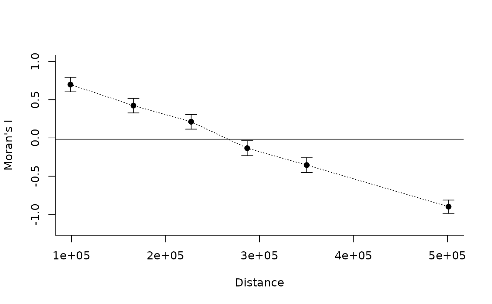

Computes spatial correlograms using Moran's I to quantify spatial autocorrelation across geographic distance classes. The function accepts a single numeric variable or a matrix containing multiple variables and calculates spatial autocorrelation at different spatial scales.
Arguments
- x
A numeric vector containing the values of a variable measured at different geographic locations, or a numeric matrix with variables in columns and locations in rows. The order of locations must correspond to the distance matrix supplied in `y`.
- y
A geographic distance matrix of class `matrix` or `dist`. Distances must correspond to the locations represented in `x`. Distances calculated using [lets.distmat()] are expressed in meters when geographic coordinates are supplied.
- z
Integer specifying the number of geographic distance classes used to construct the correlogram. Distance classes containing insufficient observations are omitted.
- equidistant
Logical. If `TRUE`, distance classes have equal widths. If `FALSE` (default), classes are defined using quantiles of pairwise distances, producing approximately equal numbers of location pairs per class. Repeated distances may result in unequal class sizes. Currently, this argument is only applied when `x` is a single variable.
- plot
Logical. If `TRUE` (default), plots the spatial correlogram showing Moran's I across geographic distance classes.
Value
A numeric matrix containing the results for each geographic distance class.
When `x` is a numeric vector, the matrix contains:
- Observed
Observed Moran's I for each distance class.
- Confidence_Interval_(95%)
Half-width of the approximate 95% interval around the observed Moran's I, calculated as 1.96 times its estimated standard deviation.
- Expected_value
Expected Moran's I under the null hypothesis of spatial randomness.
- p_value
Two-sided p-value calculated using a normal approximation to the null distribution.
- Mean_Distance
Midpoint of the distance-class boundaries, expressed in the same units as `y`.
- Count
Number of ordered location pairs included in the distance class.
When `x` contains multiple variables, the function returns:
- Observed
Mean observed Moran's I across variables.
- Standard_Deviation
Standard deviation of Moran's I across variables.
- Expected_value
Mean expected Moran's I across variables.
- Mean_Distance
Mean distance-class midpoint across variables.
- Count
Mean number of ordered location pairs across variables.
Details
Moran's I measures the degree of spatial autocorrelation in a variable. Positive values indicate that locations separated by a given geographic distance tend to have similar values, whereas negative values indicate spatial dissimilarity. Values close to the expected Moran's I indicate little evidence of spatial autocorrelation at that distance.
The geographic distance matrix is divided into `z` distance classes. For each class, a binary spatial weights matrix is constructed, assigning a weight of one to pairs of locations within the corresponding distance interval and zero otherwise. Moran's I is then calculated independently for each class.
The expected value is calculated as -1 / (n - 1), where `n` is the number of locations having at least one connection within the distance class. The approximate 95 obtained from the analytical variance of Moran's I under randomization assumptions. P-values are calculated using a normal approximation, without Monte Carlo permutations.
When multiple variables are provided, Moran's I is computed separately for each variable and summarized by its mean and standard deviation across variables. This standard deviation describes variation among variables and should not be interpreted as inferential uncertainty around the mean.
Spatial correlograms can be used to investigate the spatial structure of ecological and environmental variables, identify characteristic distances of spatial autocorrelation, and compare broad-scale spatial patterns among variables.
Results depend on the number and definition of distance classes, the geographic distribution of sampling locations, and the spatial structure of the analyzed variable. Distance classes containing too few connected locations may produce undefined statistics and are excluded from the output.
References
Sokal, R. R. & Oden, N. L. (1978). Spatial autocorrelation in biology. 1. Methodology. Biological Journal of the Linnean Society, 10, 199-228.
Sokal, R. R. & Oden, N. L. (1978). Spatial autocorrelation in biology. 2. Some biological implications and four applications of evolutionary and ecological interest. Biological Journal of the Linnean Society, 10, 229-249.
Examples
# Generate geographic coordinates
coords <- as.matrix(expand.grid(
longitude = seq(-50, -46, length.out = 8),
latitude = seq(-18, -14, length.out = 8)
))
# Calculate geographic distances in meters
dist_mat <- lets.distmat(coords)
# Create a spatially structured variable
set.seed(123)
x <- coords[, 1] + coords[, 2] +
rnorm(nrow(coords), sd = 0.5)
# Moran's I correlogram
result <- lets.correl(
x,
dist_mat,
z = 6,
equidistant = FALSE,
plot = TRUE
)

print(result)
#> Observed Confidence_Interval_(95%) Expected_value p_value
#> [1,] 0.6987740 0.09556894 -0.01587302 0.000000e+00
#> [2,] 0.4236092 0.09548414 -0.01587302 0.000000e+00
#> [3,] 0.2118842 0.09603974 -0.01587302 3.349753e-06
#> [4,] -0.1336004 0.09842033 -0.01587302 1.905303e-02
#> [5,] -0.3545863 0.09612317 -0.01587302 4.966321e-12
#> [6,] -0.8984008 0.08683492 -0.01694915 4.430017e-88
#> Mean_Distance Count
#> [1,] 98953.01 684
#> [2,] 165974.35 668
#> [3,] 227370.08 680
#> [4,] 287050.08 660
#> [5,] 350359.64 668
#> [6,] 501267.62 672
# Compare multiple variables
x2 <- rnorm(nrow(coords))
variables <- cbind(
Spatial_gradient = x,
Random_variable = x2
)
result_multi <- lets.correl(
variables,
dist_mat,
z = 6,
plot = FALSE
)
print(result_multi)
#> Observed Standard_Deviation Expected_value Mean_Distance Count
#> [1,] 0.32805908 0.52427004 -0.01587302 98953.01 684
#> [2,] 0.19591067 0.32201436 -0.01587302 165974.35 668
#> [3,] 0.10033501 0.15775440 -0.01587302 227370.08 680
#> [4,] -0.06789698 0.09291866 -0.01587302 287050.08 660
#> [5,] -0.15503082 0.28221411 -0.01587302 350359.64 668
#> [6,] -0.47309704 0.60147037 -0.01694915 501267.62 672